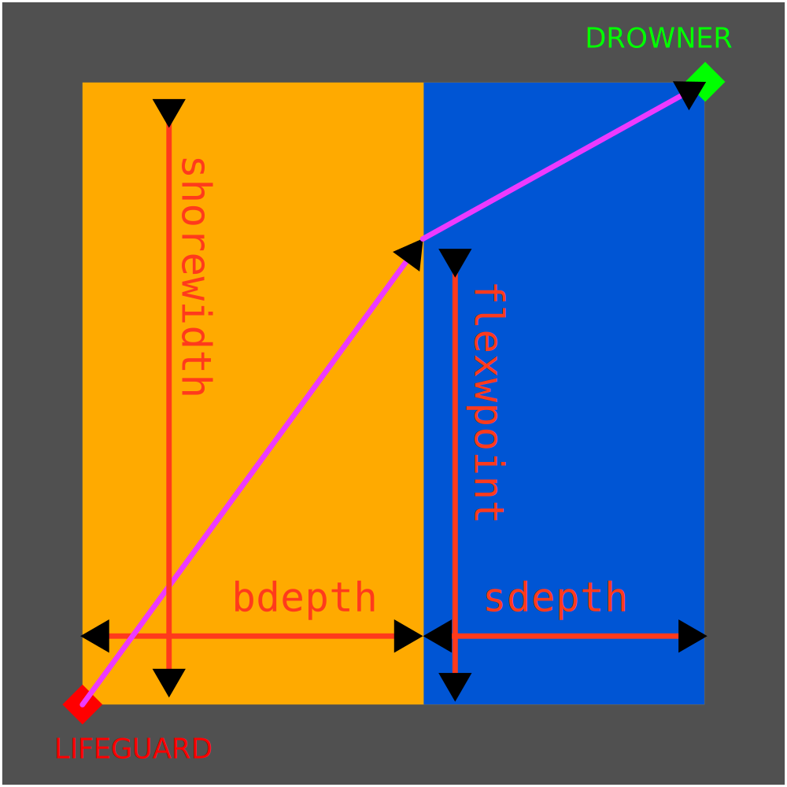
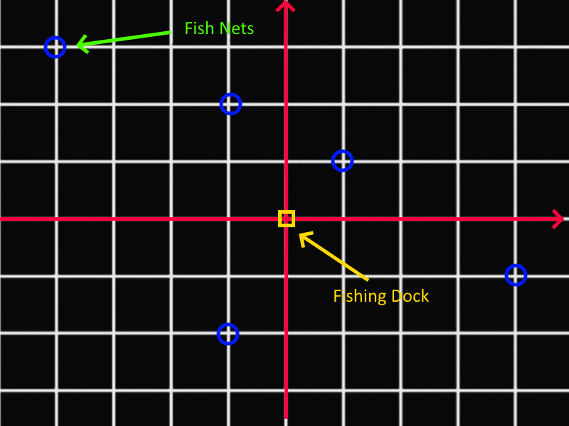

The Optimal Path
Requirements:
This problem requires use of:- - Functions
- - Lists
- - Turtle
- - Trigonometry
Problem:
Finding the shortest/quickest path is not always obvious. This series of problems will focus on using different approaches to find optimal paths, and on providing a visual confirmation of our solutions:
- Part I will focus on the visual side of things, writing functions to draw paths for a turtle in a coordinate system.
- Part II will focus on finding the optimal path through dichotomy.
- Part III will focus on finding the optimal path through brute force.
Questions:
I) Turtle in a grid
- Write
absmove(), a function that moves a turtle to a given absolute position (x,y). Use conversion/scaling units as needed. - Improve on it by adding a third parameter write that, if true, draws the path of the turtle, if false does not.
- Improve on the function by returning the distance covered in pixels by the turtle.
- Write a
move()function that moves the turtle relative to it's current position. If the turtle is at position (a,b), it should arrive at (a+x,b+y); - Improve the function by adding a write parameter and returning the distance covered as before.
- Improve
absmove()andmove()by making them move the turtle in a straight line to the aimed position, if it's not yet the case.
II) The lifeguard dichotomy

A lifeguard must save a drowning person from death. To do so, the lifeguard must go as quickly as possible from where he stands to where the drowner is. However the quickest path is not a straight line, because beachspeed, his speed on sand, is different from his seaspeed, his speed in water. You must help that lifeguard figure out what the quickest path would be.
shorewidth, bdepth,sdepth and flexpoint should be expressed in meters. beachspeed and seaspeed should be expressed in meters per second. flexpoint is the determining factor to find the the quickest path.
- Set variables for the constants that are relevant to this part of the problem
- Write a function lifeguardpath() that takes a parameter flexpoint and draws the path the lifeguard would take.
- Improve that function by making it return the distance the lifeguard covers
- Improve that function by making it return instead, the time the lifeguard would take along that path.
We now have a way to draw and measure how long it takes to go along a given path. We will now dichotomize to find an optimal solution. Here is an example of the use of the dichotomy method:
Bob and Jane are playing a number guessing game. Jan can choose any integer between 0 and 100. Jane can only tell Bob if his guess is correct, too high or too low. She is thinking of 15.
Bob is well versed in the dichotomy method and says: "50"
Jane replies: "Too high!"
Bob then says: "25"
Jane replies: "Too high!"
Bob then says: "12" (he would have liked to say 12.5, but the rules state that we are only guessing integers)
Jane says: "Too low!"
Bob thinks for a second, remembers that (25 - 12)/2 + 12 is equal to 18.5 and says: "18"
Jane says: "Too high!"
Bob thinks again about how (18- 12)/2 + 12 = 15 and says 15!
Jane says: "Correct!"
III) The systematic fisherman
You are a fisherman on an isle in the Caribbean. Every day, head office faxes you a list of coordinates. As an example, it could be:
[[0,3],[-1,5],[2,2],[-3,4],[-7,2],[7,-12]]
Before looking at the questions, copy then study this code block. It's what you will use to simulate the faxes head office is sending you. You are only allowed to interact with the "fax" variable.
#head office fax simulator
import random
maxy = 15
maxx = 15
minnets = 5
maxnets = 10
array = []
fax = ""
for i in range(random.randint(minnets,maxnets)):
randx = random.randint(-maxx,maxx)
randy = random.randint(-maxy,maxy)
whilecounter = 0
while([randx,randy] in array):
whilecounter += 1
randx = random.randint(-maxx,maxx)
randy = random.randint(-maxy,maxy)
if(whilecounter > 10):
array.append("faxing issue...")
break
array.append([randx,randy])
#only interact with the variable fax
fax = str(array)
- Create a route variable that represents the list of successive points you take to cover all fishing nets.
- Create a function that takes that route as a parameter and draws out, with turtle, the path you would take.
- Find the best possible route and draw it out.